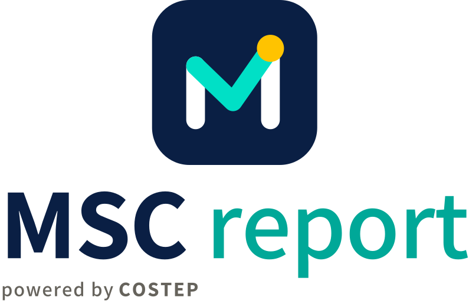
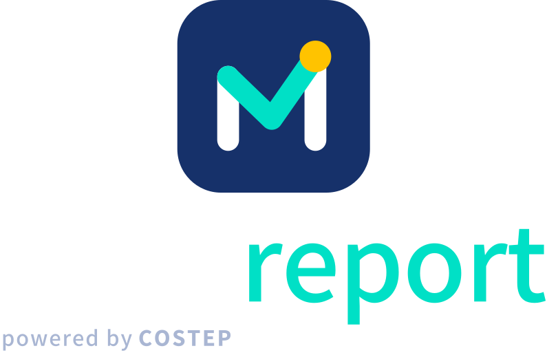
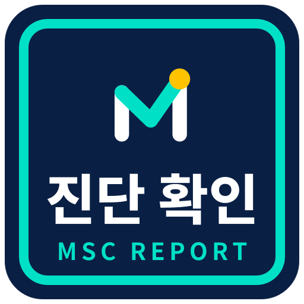

브랜드 키트 v1
Growth-M — 진단(M)에서 성장(오르는 선)으로. 금색 점은 그 끝의 성과 지표.
1. 주 로고 (조합형)
밝은 바탕 · msc-lockup-horizontal-light
 남색 바탕 · msc-lockup-horizontal-dark
남색 바탕 · msc-lockup-horizontal-dark
세로형 · msc-lockup-stacked-light
세로형 · msc-lockup-stacked-dark2. 엠블럼
color
 color-ondark
color-ondarkmark-dark (타일 없음)
mark-light (타일 없음)
mono-black
mono-white
3. 글자 로고 · 보조 인장
msc-wordmark-light-sub
msc-wordmark-dark-sub

진단 확인 인장 — 보고서 표지·서명란 전용4. 색
Navy#0A1F44 · 타일·글자
Teal#00E0C6 · 남색 위 강조
Teal ink#00A898 · 흰 바탕 위 'report'
Gold#FFC300 · 성과 점
Black#0A0B0F · 흑백판
Paper#F6F5F1 · 바탕
글꼴: Noto Sans KR — MSC 800(ExtraBold) · report 500(Medium) · powered by COSTEP 500/800. 로고 글자는 모두 윤곽선이라 글꼴 설치 없이 같게 보입니다.
5. 최소 크기 · 여백
16 단순화판
24 단순화판
32
48
64
둘레 여백: 엠블럼 높이의 1/4 이상 비웁니다.
6. 하지 말 것
늘리거나 찌그러뜨리기
색 바꾸기
대비가 낮은 바탕
기울이기·회전
7. 파일
svg/원본 벡터 25종 — 인쇄·편집·웹은 이것부터png/투명 바탕 — 엠블럼 16·24·32·48·64·128·180·192·256·512·1024px, 조합형·글자 로고 가로 320·640·1280·2560px, 인장 128~1024pxjpg/같은 크기, 바탕색 채움(밝은 판은 흰색, 남색 판은 #0A1F44, 흑백 흰판은 검정)favicon/favicon.ico(16~64) · favicon.svg · apple-touch-icon(180) · icon-192 · icon-512